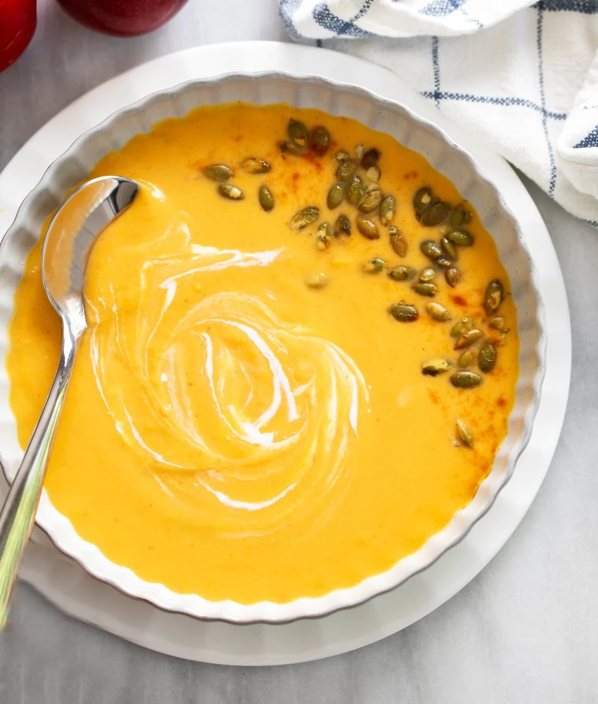

Sweet Potato Soup

This Sweet Potato Soup recipe is easy to make with a healthy mix of vegetables and a savory broth that's loaded
with warm, cozy flavors!
Ingredients
- 2 tablespoons butter
- 1 yellow onion, diced
- 96 g carrots, diced
- 2 celery stalks
- 0.5 teaspoon salt
- 3 cloves garlic, minced
- 2 lbs. sweet potatoes, about 3 large potatoes
- 1 apple
- 1 teaspoon soy sauce
- 1 teaspoon apple cider vinegar
- 1.3 l chicken broth
- 181.5 g half and half, or coconut milk
- ½ chicken bouillon cube
- 169.5 g cheddar cheese, shredded
Seasonings
- 0.5 teaspoon EACH: dried oregano, thyme, mustard powder, smoked paprika
- 0.25 teaspoon pepper
- 1 pinch EACH: cayenne, nutmeg
Instructions
- Heat butter over medium heat and add the onions, carrots, and celery. Season with salt and toss to combine.
Soften for 15-20 minutes, this allows the onions/carrots to caramelize slightly and develop a deeper flavor.
- Add the garlic, soy sauce, apple cider vinegar, and seasonings and cook for 2 minutes.
- Peel the potatoes and the apple and cut them into 3/4-inch cubes. Add them to the pot and stir to combine.
Heat through for 10 minutes, uncovered.
- Add the chicken broth and half and half. Bring to a boil, then reduce to a simmer. Cover partially and
simmer for 20 minutes, or until the potatoes are fork tender.
- Remove from heat. Use an immersion blender to blend the soup until smooth, or transfer to a blender in
batches.
- Return to low heat and gradually sprinkle in the cheese. Simmer until your desired thickness is obtained, it
continues to thicken the longer it simmers. Note that it becomes thicker as it cools and during storage as
well. Serve!
Home